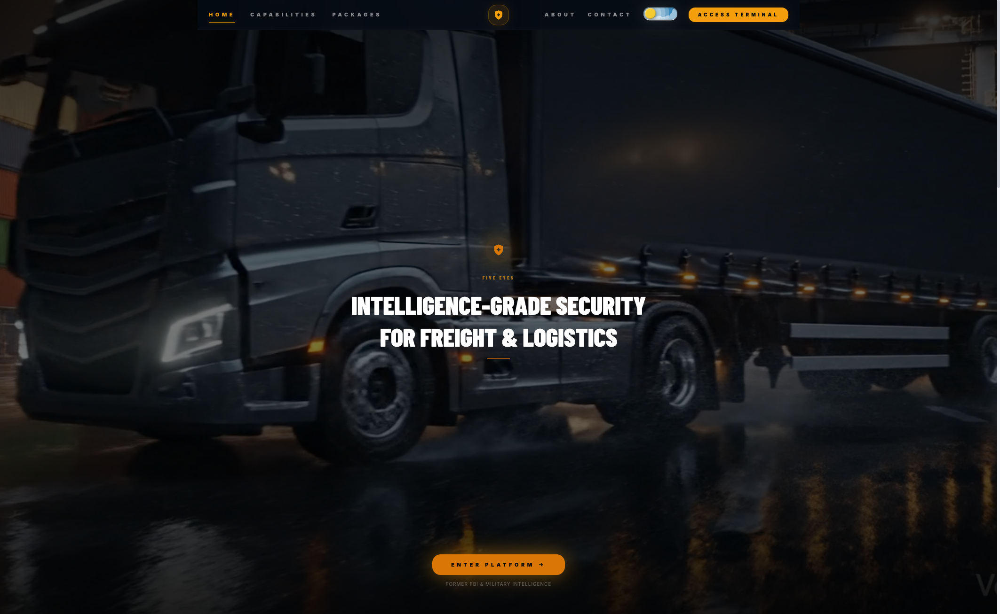
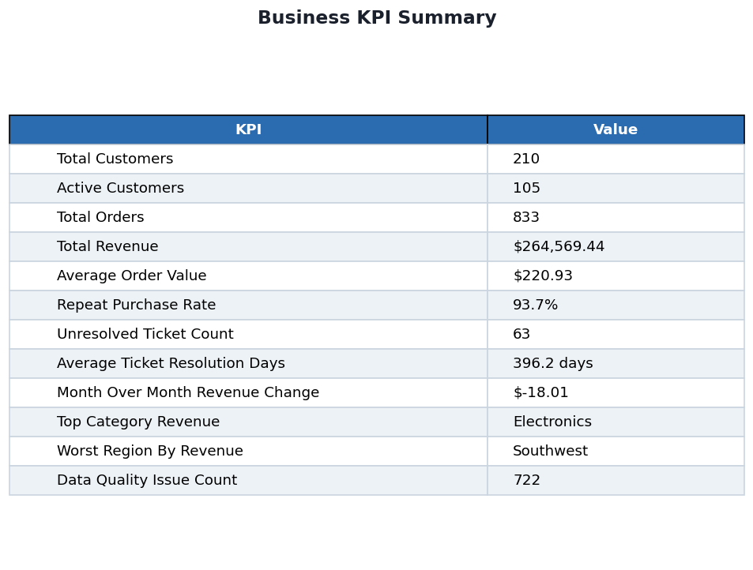
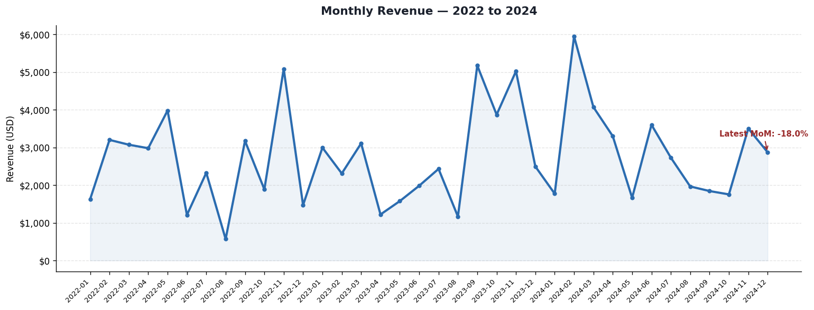
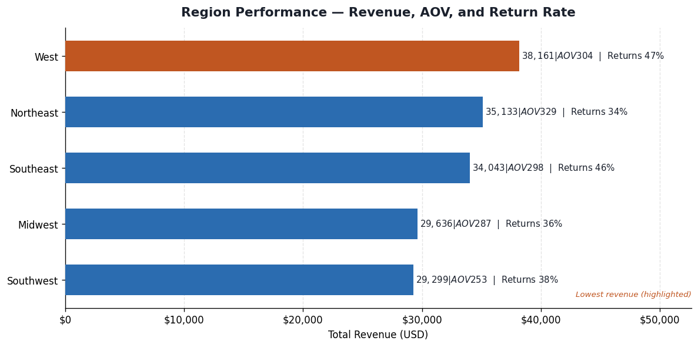

Five Eyes Training Platform
Operational cybersecurity training platform with role-based workflows, scenario execution management, and measurable readiness outputs across team structures.
Product-facing systems work, analytics runtime delivery, and operations-oriented full-stack builds. Each project emphasizes output quality and real execution behavior.

Operational cybersecurity training platform with role-based workflows, scenario execution management, and measurable readiness outputs across team structures.



Local-first analytics engine that ingests large datasets, extracts KPI signals, flags anomalies, and produces dashboard/report outputs without cloud dependency.